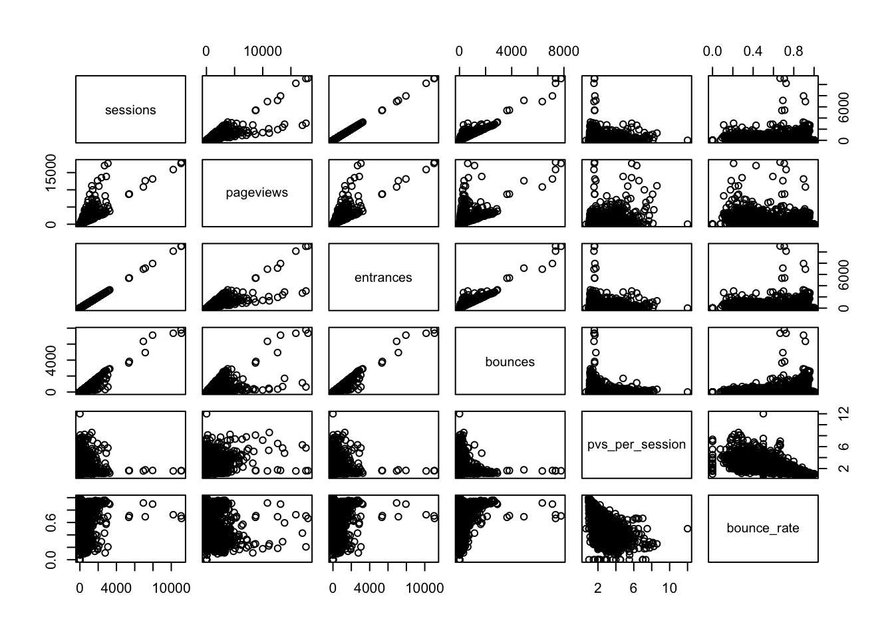
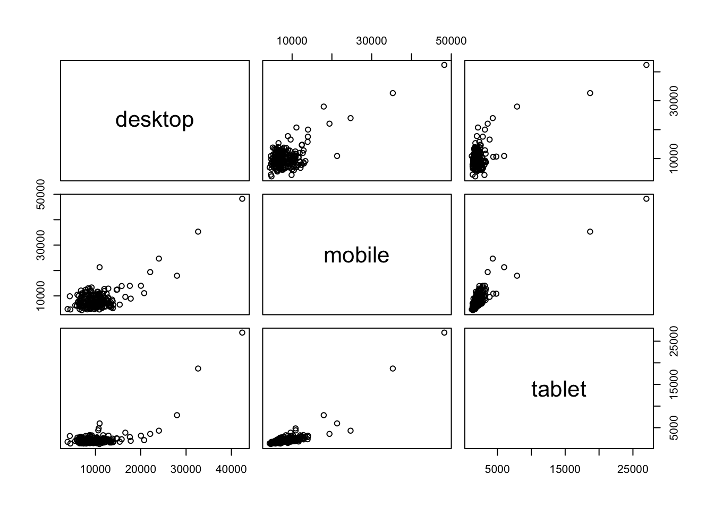

This exercise is dependent on the successful completion of Exercise 4.
For this exercise, complete the following tasks with web_data (which should now have a pageviews_per_visit and a bounce_rate column following Exercise 4):
web_data.deviceCategory.Remember, this exercise is contingent on having completed Exercise 4. Check your Environment tab to make sure you have a web_data data frame with 5732 rows (observations) and 10 variables. Or, use the str() function to check the structure of the object:
str(web_data)## 'data.frame': 5732 obs. of 10 variables:
## $ X : int 1 2 3 4 5 6 7 8 9 10 ...
## $ date : chr "2016-01-01" "2016-01-01" "2016-01-01" "2016-01-01" ...
## $ channelGrouping: chr "(Other)" "(Other)" "(Other)" "Direct" ...
## $ deviceCategory : chr "desktop" "mobile" "tablet" "desktop" ...
## $ sessions : int 19 112 24 133 345 126 307 3266 1025 17 ...
## $ pageviews : int 23 162 41 423 878 237 356 3772 1137 52 ...
## $ entrances : int 19 112 24 133 344 126 305 3253 1021 17 ...
## $ bounces : int 15 82 19 61 172 77 270 2904 925 6 ...
## $ pvs_per_session: num 1.21 1.45 1.71 3.18 2.54 ...
## $ bounce_rate : num 0.789 0.732 0.792 0.459 0.5 ...All set? Good.
# We'll be using 'dplyr' functions
library(dplyr)
# Get just the data -- numeric only! -- that we'll be working with
cor_data <- select(web_data, -c(X, date, deviceCategory, channelGrouping))
# Get a table of correlation coefficients.
cor(cor_data)## sessions pageviews entrances bounces
## sessions 1.00000000 0.8384321 0.99999228 0.9411201
## pageviews 0.83843209 1.0000000 0.83770782 0.6364753
## entrances 0.99999228 0.8377078 1.00000000 0.9416535
## bounces 0.94112013 0.6364753 0.94165351 1.0000000
## pvs_per_session -0.02519040 0.3054187 -0.02612774 -0.1985801
## bounce_rate 0.06904842 -0.2291329 0.07015993 0.2758110
## pvs_per_session bounce_rate
## sessions -0.02519040 0.06904842
## pageviews 0.30541871 -0.22913292
## entrances -0.02612774 0.07015993
## bounces -0.19858006 0.27581103
## pvs_per_session 1.00000000 -0.79268790
## bounce_rate -0.79268790 1.00000000Let’s go ahead and get a visual of the scatterplots of this:
pairs(cor_data)
There are several things we could dig into there (for instance: what’s going on with pageviews and sessions? It looks like two distinct patterns there that might be worth exploring), but…the assignment is the assignment, so let’s move on!
From
library(dplyr)
library(tidyr)
# Collapse the channelGrouping by summing them, and then "spread" the
# deviceCategory values over the columns
pivoted_data <-
summarise(group_by(web_data, date, deviceCategory),
pageviews = sum(pageviews)) %>%
spread(deviceCategory, pageviews)
# Get rid of any NA's and replace with 0
pivoted_data[is.na(pivoted_data)] <- 0
# Let's take a quick look at our data
head(pivoted_data)## Source: local data frame [6 x 4]
## Groups: date [6]
##
## date desktop mobile tablet
## <chr> <int> <int> <int>
## 1 2016-01-01 4335 9868 3090
## 2 2016-01-02 10911 21305 5995
## 3 2016-01-03 6845 9642 2705
## 4 2016-01-04 10333 8462 2421
## 5 2016-01-05 9332 7255 2253
## 6 2016-01-06 9589 7050 1963Now, we can calculate the correlation coefficients and make some scatterplots!
# Remember, we don't want the date field, so we have to remove that
cor(pivoted_data[,-1])## desktop mobile tablet
## desktop 1.0000000 0.7244218 0.7184109
## mobile 0.7244218 1.0000000 0.8732054
## tablet 0.7184109 0.8732054 1.0000000pairs(pivoted_data[,-1])
The interpretation of this isn’t particularly sexy, as it makes sense that, when traffic increases for one device type, it probably increases for other device types. But, since the pedagocial purpose of this exercise was to get you subsetting the data and digging in, we’re going to call it a success!